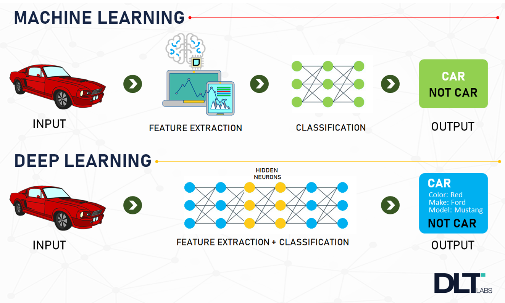
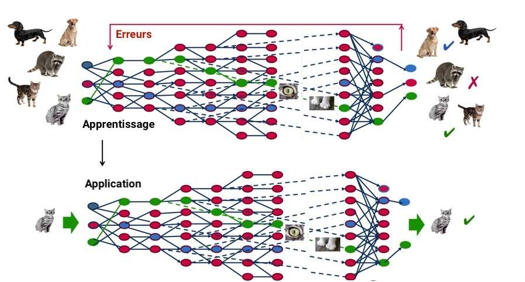
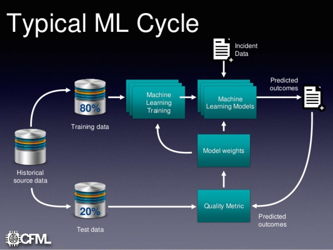

Définition
John McCarthy, né en 1927 à Boston et mort en 2011, est le créateur du terme "intelligence artificielle". Il est défini comme : "la construction de programmes informatiques qui s’adonnent à des tâches qui sont, pour l’instant, accomplies de façon plus satisfaisante par des êtres humains car elles demandent des processus mentaux de haut niveau tels que : l’apprentissage perceptuel, l’organisation de la mémoire et le raisonnement critique» donc elle permet d'accomplir des tâches qui sont compliquées ou même impossibles d'être réalisées par l'Homme.Il y a 2 types d'intelligence artificielle : Le Deep Learning et Le Machine Learning
Qu'est-ce que le "Machine Learning" ?
Le Machine Learningou l'apprentissage automatique s’agit d’une science moderne permettant de découvrir des patterns et d’effectuer des prédictions à partir de données en se basant sur des statistiques, sur du forage de données, sur la reconnaissances de patterns et sur les analyses prédictives. Les premiers algorithmes sont créés à la fin des années 1950. Le plus connu d’entre eux n’est autre que le Perceptron.Le Machine Learning est très efficace dans les situations où les insights doivent être découvertes à partir de larges ensembles de données diverses et changeantes, c’est à dire : le Big Data. Pour l’analyse de telles données, il se révèle nettement plus efficace que les méthodes traditionnelles en termes de précision et de vitesse. Par exemple, pour en se basant sur les informations associées à une transaction comme le montant et la localisation, et sur les données historiques et sociales, le Machine Learning permet de détecter une fraude potentielle en une milliseconde. Ainsi, cette méthode est nettement plus efficace que les méthodes traditionnelles pour l’analyse de données transactionnelles, de données issues des réseaux sociaux ou de plateformes CRM.

Le Fonctionnement
La machine récupère des quantités gigantesques d’informations, qu’elle réutilise pour s’adapter à de nouvelles situations et même pour les anticiper.L’idée est que l’algorithme construise une « représentation interne » tout seul, une sorte de conscience de la situation devant laquelle il se retrouve, afin de pouvoir effectuer la tâche qui lui est demandée (prédiction, identification, etc). Mais avant cela, il va avoir besoin de s’« entraîner » sur des exemples afin de pouvoir s’améliorer, d’où la notion d’apprentissage.
 Qu'est-ce que le "Deep Learning" ?
Le Deep Learning ou apprentissage profond est un type d'intelligence artificielle dérivé du machine learning (apprentissage automatique) où la machine est capable d'apprendre par elle-même, contrairement à la programmation où elle se contente d'exécuter à la lettre des règles prédéterminées.
Le Fonctionnement
Le deep Learning s'appuie sur un réseau de neurones artificiels s'inspirant du cerveau humain. Ce réseau est composé de dizaines voire de centaines de «couches» de neurones, chacune recevant et interprétant les informations de la couche précédente. Le système apprendra par exemple à reconnaître les lettres avant de s'attaquer aux mots dans un texte, ou détermine s'il y a un visage sur une photo avant de découvrir de quelle personne il s'agit.

À chaque étape, les «mauvaises» réponses sont éliminées et renvoyées vers les niveaux en amont pour ajuster le modèle mathématique. Au fur et à mesure, le programme réorganise les informations en blocs plus complexes. Lorsque ce modèle est par la suite appliqué à d'autres cas, il est normalement capable de reconnaître un chat sans que personne ne lui ait jamais indiqué qu'il n'ai jamais appris le concept de chat. Les données de départ sont essentielles : plus le système accumule d'expériences différentes, plus il sera performant.